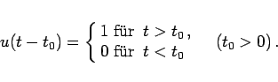
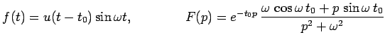
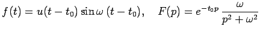

Inhalt Index DeskTop Bronstein

 Integraltransformationen Laplace-Transformation Eigenschaften der Laplace-Transformation Bildfunktionen spezieller Funktionen
Integraltransformationen Laplace-Transformation Eigenschaften der Laplace-Transformation Bildfunktionen spezieller Funktionen


Der Einheitssprung bei t=t0 wird durch die Sprungfunktion (s. Abbildung),
auch HEAVISIDEsche Einheitsfunktion genannt, vermittelt:
|  | (15.25) |
| Beispiel A |
|
 (s. linke Abbildung). |
| Beispiel B |
|
 (s. rechte Abbildung). |